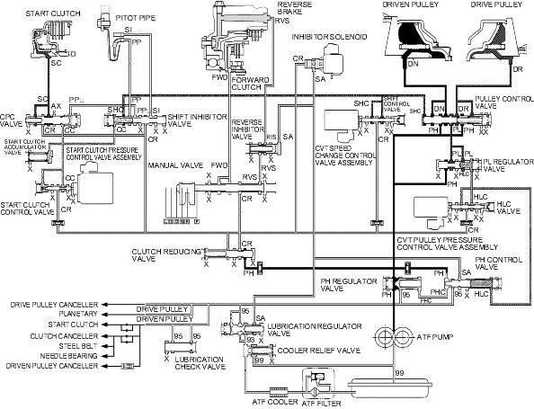

Position
Position
Honda Multi Matic Transmission/CVT
|
14-281 |
Position
The manual valve is shifted in the position and uncovers the port leading reverse brake pressure (RVS) to the reverse inhibitor valve. The inhibitor solenoid is turned OFF by the PCM and SH-A pressure (SA) is applied to the right end of the reverse inhibitor valve. The reverse inhibitor valve is moved to the left side and uncovers the port leading reverse brake pressure (RVS') to the reverse brake. Clutch reducing pressure (CR) becomes reverse brake pressure (RVS) and flows to the reverse brake via the reverse inhibitor valve. The reverse brake is engaged and it locks the planetary carrier.
NOTE: When used, ''left'' or ''right'' indicates direction on the hydraulic circuit.
